CAPTAIN AMERICA: THE FIRST AVENGER is something of an extended introduction to the MCU. The bulk of the movie is set in the 40s, and it introduces viewers to the SSR, which becomes S.H.I.E.L.D. Even the end-credits sequence, which features Nick Fury, is a nice setup for everything that will follow.
CAPTAIN MARVEL effectively takes the spot formerly held by IRON MAN as the proper kickoff for the entire MCU. The story is primarily set in the mid-'90s and features the first evolution of S.H.I.E.L.D. and an important stage of Nick Fury's career. The story also sets up the Kree (later seen in GUARDIANS OF THE GALAXY) and, most importantly, deals with an object that becomes significant toward the end of Marvel’s Phase One. As the origin story for Carol Danvers (Brie Larson), this also feels more like a Phase One movie than anything Marvel has done in the past few years. In terms of tone and theme, it sits well in the beginning of the viewing order. Yes, there’s a connection to INFINITY WAR and ENDGAME, but just keep this film’s first post-credits sequence in your back pocket for later.
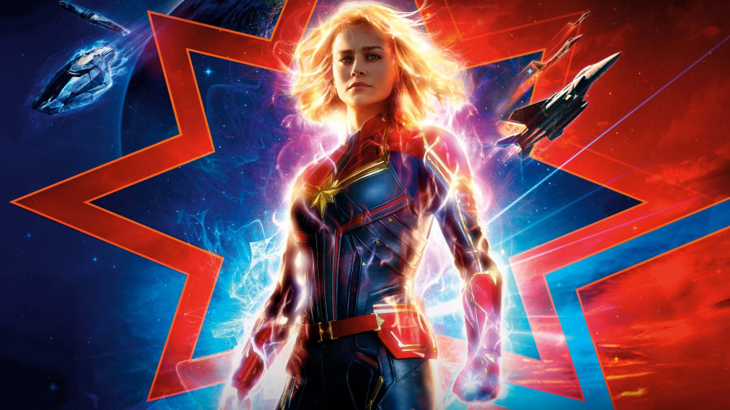Although IRON MAN was the first MCU movie, it has more power when placed here. We know who Howard Stark is thanks to THE FIRST AVENGER. Watching his son take his first faltering steps into the “bigger universe” is an effective stage of the MCU movie order. The final scene, with Nick Fury stepping out of the shadows, will take on a subtly different meaning after the events of CAPTAIN MARVEL. Rather than hint at the birth of the MCU, it will become connective tissue linking the first three films together.
After IRON MAN introduces viewers to the modern-day iteration of S.H.I.E.L.D., the sequel dives deep into that organization. It also features Nick Fury in a far more significant role, allowing viewers to get a sense of just who this figure really is. Meanwhile, the focus on Howard Stark’s legacy continues to draw the narrative threads together. It makes perfect sense to watch IRON MAN 2 at this point.
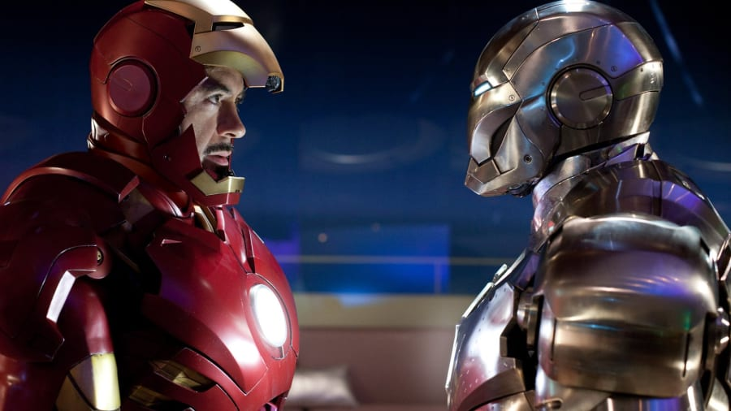This particular adjustment to the viewing order is appropriate. While THE INCREDIBLE HULK actually happens at the same time as IRON MAN 2, the end-credits sequence assumes Tony Stark now has a “consultant” role with S.H.I.E.L.D.
THOR introduces viewers to Asgard and launches a series of stories inspired by events in the Realm Eternal. At the same time, it continues to develop the story of S.H.I.E.L.D., with Coulson and Hawkeye playing important roles.
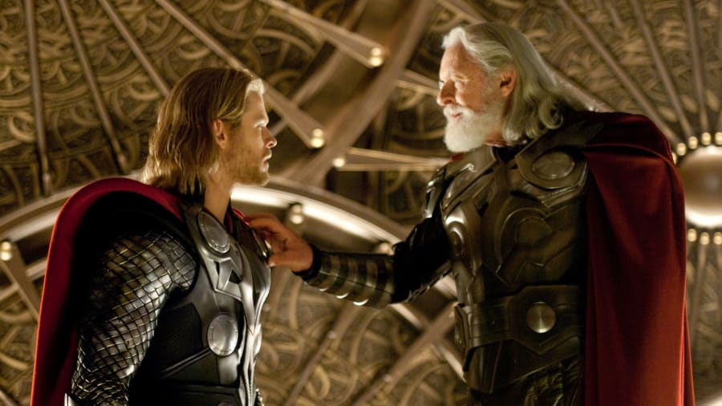This is a natural fit after the events of THOR, continuing many of that film’s themes and character arcs. Loki returns as a villain; the concept of the Tesseract is explored; and the existence of dangerous alien beings becomes public knowledge when the Chitauri invade New York. There’s also a more subtle detail as this is the first film to really hint that S.H.I.E.L.D. isn’t just “good guys.” THE AVENGERS includes a disturbing sequence in which the World Security Council orders a nuclear attack on American soil.
Here’s where the order of events really changes, but for good reason. The last two films have explored the cosmic side of the MCU, and it makes sense to continue that line. Some of the most important themes and ideas — particularly the relationship between Thor and Loki — follow on perfectly from THE AVENGERS. This also introduces the idea of the Infinity Stones, although they’re only partly explained at this point.
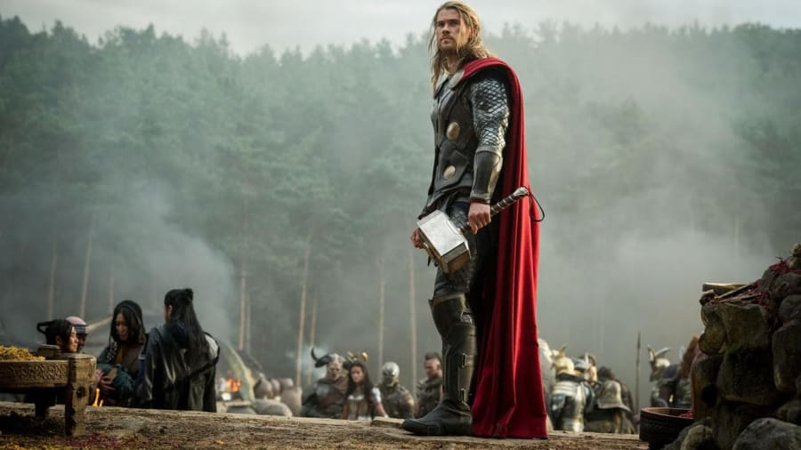Continuing the cosmic focus, GUARDIANS OF THE GALAXY unveils another Infinity Stone. The Collector, introduced in the stinger of THOR: THE DARK WORLD, makes another appearance, tying the two films together. Viewers are left with a strong sense that the Infinity Stones are being brought into play across the universe.
The events of GUARDIANS OF THE GALAXY VOL. 2 are set only a couple of months after the first film, so it makes sense for this to follow straight on. It continues the space-opera style and tone established by the last two films in our Marvel movie order.
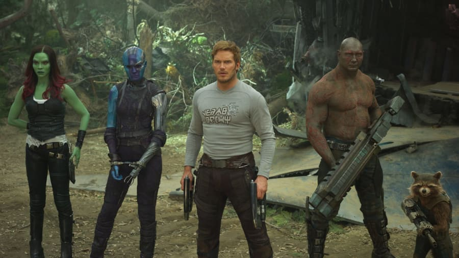The cosmic diversion is over, and the focus now moves back to Earth, where Tony Stark is dealing with the emotional fallout from THE AVENGERS. The passage of time between the films actually makes Tony’s PTSD feel more significant, while also making it feel more natural that Stark has had the time to build so many armors.
Continuing with the Earthly focus, this movie shows what Captain America is up to. This story could even be happening at the same time as IRON MAN 3, explaining why Cap doesn’t help Tony against the Mandarin and why Stark isn’t on hand to deal with Hydra. Or maybe Cap and Stark are merely still wary of one another at this stage. Perhaps most importantly, placing this film here begins a Falcon arc that will run through the next few movies.
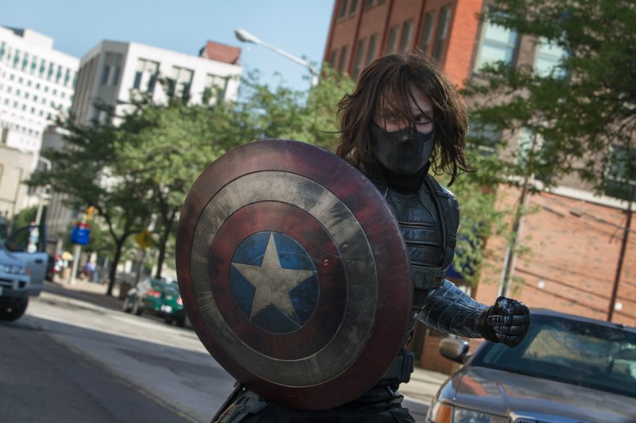
This is another natural fit. The film opens with the Avengers taking down a major Hydra base. In thematic terms, placing this close to IRON MAN 3 makes Tony’s emotional journey feel more immediate and natural. This film also begins to tie the Earth-bound adventures into the cosmic stories, with another Infinity Stone revealed. Thor’s vision establishes a sense of impending threat.
Set in the immediate aftermath of AVENGERS: AGE OF ULTRON, ANT-MAN contains subtle references to the devastation at Sokovia. Placing it here in the lineup makes the Falcon fight carry additional weight, bringing Sam closer to primary character status.
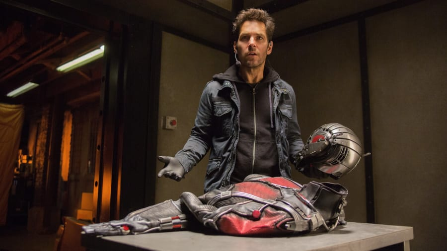The Sokovia arc that begun in AVENGERS: AGE OF ULTRON comes to a head in CAPTAIN AMERICA: CIVIL WAR, tearing the Avengers apart. CIVIL WAR acts as the launchpad for the next batch of Earth-bound stories, so they slot in nicely after it. It also follows on perfectly from ANT-MAN’s end-credits scene.
Black Panther was introduced in CIVIL WAR, and this continues his story. It’s appropriate to drop this movie in next, as BLACK PANTHER is set only a week after the Avengers divide, and the Wakandan focus follows on nicely from the end-credits sequence.
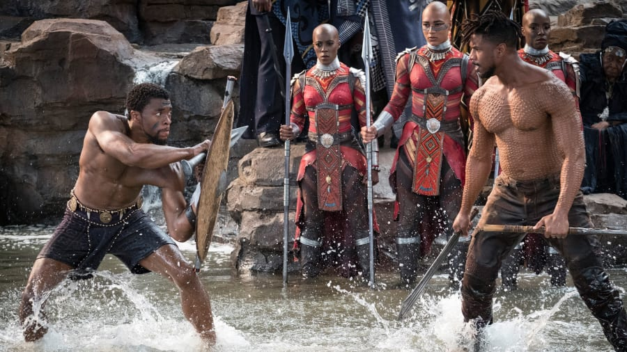Set two months after CIVIL WAR, SPIDER-MAN: HOMECOMING focuses on Peter Parker. It’s important to note that Tony Stark has been given time to heal a little, so this viewing order makes sense.
Placing DOCTOR STRANGE here gives the film real importance as a thematic tie between the MCU’s Earth-bound and cosmic movies. DOCTOR STRANGE introduces the concept of magic and brings the Time Stone into play. The Quantum Realm also plays a subtle role, as Strange glimpses it while being sent careering through the dimensions. Finally, the end-credits scene leads nicely into THOR: RAGNAROK.
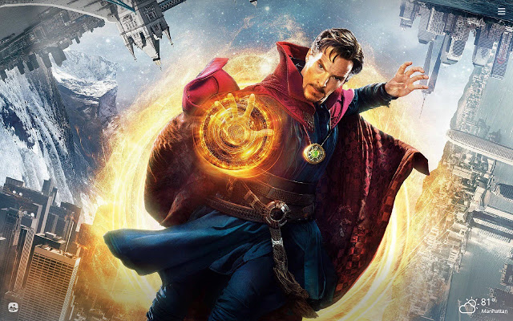This film follows on logically from DOCTOR STRANGE. (There’s even a cameo.) The end credits begin the direct buildup to AVENGERS: INFINITY WAR, with the Asgardian refugees intercepted in space by Thanos.
This is a difficult one to place in this thematic structure. While it returns to the Earth-bound adventures, ANT-MAN AND THE WASP is fantastical and funny. The bulk of the story is set before the events of AVENGERS: INFINITY WAR, so it makes sense to place it here. This particular viewing order does change how the post-credits scene plays, however. Rather than knowing what’s going on, you’ll have the same sense of shock and horror felt by Hank Pym or Scott Lang.
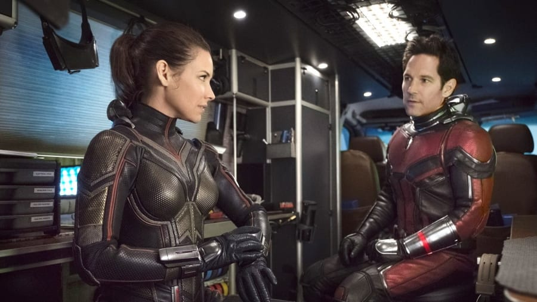
In this order, AVENGERS: INFINITY WAR will be the last thing you watch before AVENGERS: ENDGAME. That works particularly well when you consider that, according to screenwriters Christopher Markus and Stephen McFeely, the snap was originally in ENDGAME. These two films may not be a traditional Parts I and II anymore, but their relationship is so close that it’s better to watch them back to back — just how they were filmed.
Natasha Romanoff confronts the darker parts of her ledger when a dangerous conspiracy with ties to her past arises. Her ex handler, General Dreykov, is still alive. While evading capture by Taskmaster, she is forced to confront her dark past.


The world reels from the aftereffects of Thanos’s snap, and our heroes are just as affected as everyone else, if not more so. The fourth AVENGERS movie is very much the culmination of 10 years of story — it is deeply tied to everything that came before, particularly the first three AVENGERS movies. (That’s a hint about which movies you should definitely rewatch, if you only have time for a handful.) The story ties up a handful of plot threads that began in several previous movies and opens up new dimensions for future MCU movies to explore.
Marvel’s second SPIDER-MAN movie very specifically follows ENDGAME, as it explores Peter’s grief over the passing of Tony Stark and the changes wrought on the world. It’s somewhere between a coda to the last storytelling phase in the MCU and, thanks to the final moments of the movie, a pointer to where Marvel is likely to go next.


Martial-arts master Shang-Chi confronts the past he thought he left behind when he's drawn into the web of the mysterious Ten Rings organization.
The Eternals, a race of immortal beings with superhuman powers who have secretly lived on Earth for thousands of years, reunite to battle the evil Deviants.
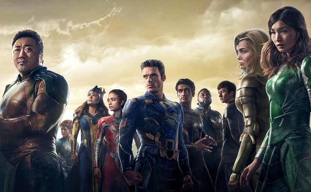With Spider-Man's identity now revealed, our friendly neighborhood web-slinger is unmasked and no longer able to separate his normal life as Peter Parker from the high stakes of being a superhero. When Peter asks for help from Doctor Strange, the stakes become even more dangerous, forcing him to discover what it truly means to be Spider-Man.